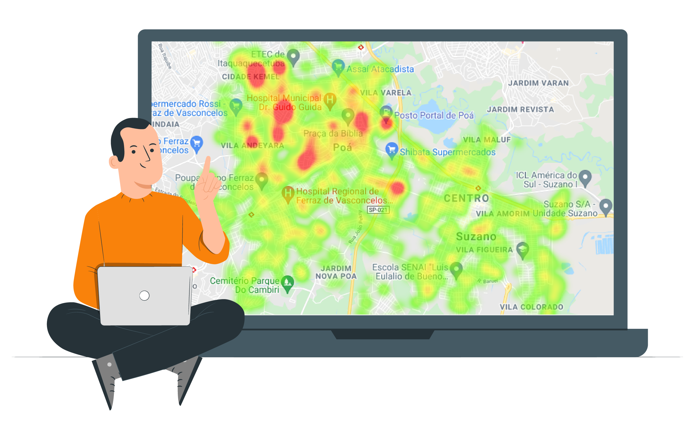

O que é um Mapa de Calor ?

Um mapa de calor, ou heatmap, é uma representação visual de dados onde as variações de valores são indicadas por diferentes cores. Ele destaca áreas com maior concentração ou intensidade, ajudando a identificar padrões e tendências em conjunto de dados.
Quanto mais intenso o valor em uma determinada região, mais intensa é a cor atribuída a essa área no mapa. É uma ferramenta útil para análise de padrões em diversas áreas, como em estatísticas, geografia, e visualização de dados.
Matrículas das Escolas Estaduais do MS

Ressaltantos Alguns Pontos
• O mapa de calor pode ser usado para identificar áreas onde há necessidade de mais escolas ou recursos educacionais.
• Por exemplo, o governo poderia se concentrar na construção de mais escolas nas regiões remotas do estado.
• As áreas mais concentradas de matrículas escolares estão nas cidades de Campo Grande, Dourados, Ponta Porã.
• As áreas menos concentradas de matrículas escolares estão nas cidades de Novo Horizonte do Sul, Laguna Carapa, Santa Rita do Pardo
Matrículas por cidade (79 Municípios)
- Água Clara - 1045 matrículas
- Alcinopolis - 272 matrículas
- Amambai - 2942 matrículas
- Anastacio - 2318 matrículas
- Anaurilandia - 682 matrículas
- Angelica - 1121 matrículas
- Antonio Joao - 1220 matrículas
- Aparecida do Taboado - 2455 matrículas
- Aquidauana - 3793 matrículas
- Aral Moreira - 1308 matrículas
- Bandeirantes - 612 matrículas
- Bataguassu - 2344 matrículas
- Batayporã - 976 matrículas
- Bela Vista - 2140 matrículas
- Bodoquena - 608 matrículas
- Bonito - 1935 matrículas
- Brasilandia - 759 matrículas
- Caarapo - 2784 matrículas
- Camapua - 1199 matrículas
- Campo Grande - 43404 matrículas
- Caracol - 285 matrículas
- Cassilandia - 1016 matrículas
- Chapadao do Sul - 1367 matrículas
- Corguinho - 348 matrículas
- Coronel Sapucaia - 1497 matrículas
- Corumba - 5994 matrículas
- Costa Rica - 1592 matrículas
- Coxim - 2604 matrículas
- Deodapolis - 1510 matrículas
- Dois Irmaos do Buriti - 778 matrículas
- Douradina - 538 matrículas
- Dourados - 17252 matrículas
- Eldorado - 855 matrículas
- Fatima do Sul - 1656 matrículas
- Figueirao - 267 matrículas
- Gloria de Dourados - 1021 matrículas
- Guia Lopes da Laguna - 1002 matrículas
- Iguatemi - 1202 matrículas
- Inocencia - 786 matrículas
- Itapora - 1822 matrículas
- Itaquirai - 1635 matrículas
- Ivinhema - 2392 matrículas
- Japora - 712 matrículas
- Jaraguari - 538 matrículas
- Jardim - 2031 matrículas
- Jatei - 622 matrículas
- Juti - 725 matrículas
- Ladario - 1102 matrículas
- Laguna Carapa - 371 matrículas
- Maracaju - 2411 matrículas
- Miranda - 1610 matrículas
- Mundo Novo - 1853 matrículas
- Navirai - 2647 matrículas
- Nioaque - 1070 matrículas
- Nova Alvorada do Sul - 1380 matrículas
- Nova Andradina - 3238 matrículas
- Novo Horizonte do Sul - 215 matrículas
- Paraiso das Águas - 329 matrículas
- Paranaiba - 2232 matrículas
- Paranhos - 878 matrículas
- Pedro Gomes - 646 matrículas
- Ponta Pora - 12056 matrículas
- Porto Murtinho - 831 matrículas
- Ribas do Rio Pardo - 1453 matrículas
- Rio Brilhante - 2377 matrículas
- Rio Negro - 475 matrículas
- Rio Verde de Mato Grosso - 1633 matrículas
- Rochedo - 424 matrículas
- Santa Rita do Pardo - 309 matrículas
- Sao Gabriel do Oeste - 2616 matrículas
- Selviria - 526 matrículas
- Sete Quedas - 975 matrículas
- Sidrolandia - 2215 matrículas
- Sonora - 935 matrículas
- Tacuru - 589 matrículas
- Taquarussu - 332 matrículas
- Terenos - 1590 matrículas
- Tres Lagoas - 10062 matrículas
- Vicentina - 818 matrículas